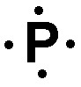
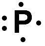
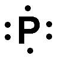

Press Ctrl-Z to toggle the answers.
asdf
asdf
May 19, 2023
name: ______________________________________
1) When a neutral atom gains an electron it becomes a(n) ____________, with a _____________ charge.
A) anion, positive
B) cation, positive
C) cation, negative
D) anion, negative*
2) An element has three stable isotopes with masses of 25.145 amu, 27.151 amu, and 29.532 amu. The heavier two isotopes have an abundance of 17.5% (middle mass) and 3.37% (largest mass), respectively. What is the average atomic mass of the element?
A) 29.0 amu
B) 26.0 amu
C) 27.3 amu
D) 25.6 amu*
3) What is the charge, and approximate mass of protons, neutrons, and electrons?
A) protons: -1 charge & 0 amu; neutron: no charge & 1 amu; electron: +1 charge & 1 amu
B) protons: no charge & 1 amu; neutron: -1 charge & 0 amu; electron: +1 charge & 1 amu
C) protons: +1 charge & 1 amu; neutron: -1 charge & 0 amu; electron: no charge & 1 amu
D) protons: +1 charge & 1 amu; neutron: no charge & 1 amu; electron: -1 charge & 0 amu*
4) How many moles of Mg are contained in 578 mg of Mg?
A) 0.0000421 mol
B) 14.1 mol
C) 23.8 mol
D) 0.0238 mol*
5) A scientific law
A) must have a mathematical formula
B) is a brief statement that summarizes past observations and makes predictions*
C) cannot be modified
D) contains an explanation of observations
6) What element is defined by the following information?
p+ = 13 n° = 15 e- = 13
A) Aluminum*
B) Sodium
C) Phosphorous
D) Sulfur
7) Which of the following statements are true?
A) Protons and electrons have approximately the same mass (about 1 amu), whereas neutrons have almost no mass.
B) Protons and neutrons have approximately the same mass (about 1 amu), whereas electrons have almost no mass.*
C) Electrons and neutrons have approximately the same mass (about 1 amu), whereas protons have almost no mass.
D) None of the above.
8) Which of the following describe a heterogeneous mixture?
A) A substance composed of two or more elements in a fixed
B) where the composition is variable throughout
C) where the composition is constant throughout
D) Two or more substances in variable proportions*
9) The statement "matter is composed of small indestructible particles" belongs to:
A) the Law of Conservation of Mass
B) the Law of Multiple Proportions
C) the Law of Definite Proportions
D) Dalton's Atomic Theory*
10) An element has an atomic mass of 104.58 amu. The X-108 isotope (107.85 amu) is 34.08%. What is the mass, in amu, of the other isotope?
A) 101.31 amu
B) 105 amu
C) 102 amu
D) 102.89 amu*
11) Calculate the atomic mass of element "X," if it has 2 naturally occurring isotopes with the
following masses and natural abundances.
X-106 106.33801 amu 75.626%
X-108 108.10180 amu 24.374%
A) 160.39 amu
B) 107.67 amu
C) 106.77 amu*
D) 106.49 amu
12) What is the name of the Ti isotope that has 28 neutrons?
A) Titanium-47
B) Titanium-50.*
C) Titanium-28
D) Titanium-22
13) Which ion is represented by the following information?
p+ = 11, e- = 12
A) Na1+
B) Mg1+
C) Na1-*
D) P1-
14) What is the average atomic mass of Ag?
A) 47 amu
B) 108 amu
C) 107.87 amu*
D) 196.97 amu
15) In the following isotope symbol, the letters for the element have been replaced with an X. What is the name of the isotope?
\( ^{14}_{6}X \)
A) Carbon-6
B) Carbon-14*
C) Carbon-8
D) Oxygen-8
16) Which of the following describes the characteristics of a gas
A) no definite volume or shape*
B) definite volume but no definite shape
C) no definite volume but a definite shape
D) definite volume and shape
17) Which of the following statements about subatomic particles are true.
A) mass number = protons + electrons
B) negatively charged ions have more protons than electrons
C) neutrons = mass number - protons*
D) positively charted ions (cations) have more electrons than protons
18) Which of the following describes an atom?
A) an individual unit of an element*
B) two or more elements bonded to each other
C) two or more elements that are not covalently or ionically bonded and have a uniform composition
D) two or more elements or compounds that are not covalently or ionically bonded and do not have a uniform composition
19) Calculate the mass (in g) of 6.08 × 1024 atoms of Zn.
A) 0.00151 g
B) 10.1 g
C) 660. g*
D) 2.39x104 g
20) How many atoms are present in 2.02 mg of Ni?
A) 2.07x1019 atoms*
B) 3.44x1018 atoms
C) 4.82e-21x101 atoms
D) 0.207 atoms
21) In the following isotope symbol, the letters for the element have been replaced with an X. Determine the number of protons, neutrons and electrons?
\( ^{13}_{6}X^{2-} \)
A) protons: 6; neutrons: 7; electrons: 8*
B) protons: 6; neutrons: 13; electrons: 8
C) protons: 7; neutrons: 6; electrons: 4
D) protons: 8; neutrons: 7; electrons: 6
22) Which of the following statements about isotopes is true?
A) isotopes have the same mass
B) isotopes have the same number of protons but different numbers of neutrons*
C) isotopes have the same number of neutrons but different numbers of protons
D) isotopes have the same mass number
23) What mass (in mg) does 8.41 moles of carbon have?
A) 700. mg
B) 101 mg
C) 1.01x105 mg*
D) 4.96x105 mg
24) Which of the following mixtures will NOT be homogeneous?
A) sugar and tea
B) sand and water*
C) sugar and water
D) ice tea and lemonade
25) How are gases different from solids and liquids?
A) Only gases take the shape of their container
B) Gas molecules have strong intermolecular bonds
C) Gases have the highest density
D) Gases fill the volume of their container*
26) Which of the following is the elemental symbol for sodium?
A) Na*
B) S
C) P
D) W
27) The atomic number (Z) is the number of ________ found in the nucleus of an atom.
A) Protons*
B) Neutrons
C) Electrons
D) Protons and neutrons
28) A new compound was recently discovered and found to have an atomic weight of 353.77 amu. This element has two isotopes, the lighter of which has a mass of 342.38 amu and an abundance of 75.929%. What is the mass of the heavier isotope?
A) 338.77
B) 357.38
C) 389.70*
D) None of the above.
29) Which of the following would have the highest lattice energy?
A) Li2O
B) Na2O
C) MgO*
D) Li2O
30) Give the name for SF6.
A) Sulfur hexafluoride*
B) Sulfur heptafluoride
C) Sulfur (II) fluoride
D) Sulfur fluoride
31) What is the formula for the compound ammonium hydrogen sulfate (or ammonium bisulfate)?
A) (NH4)2SO4
B) (NH4)2S
C) NH4SO4
D) NH4HSO4*
32) A triple covalent bond contains how many electrons?
A) 6*
B) 3
C) 4
D) 8
33) An covalent bond is best described as
A) A bond between a metal and a polyatomic ion
B) A bond between a metal and a non-metal
C) A bond formed when electrons are transferred from one atom to another
D) A bond formed when electrons are shared between two atoms*
34) Determine the name for CaCl2·2H2O
A) Calcium chloride dihydrate*
B) Calcium (II) chloride dihydrate
C) Calcium chloride bihydrate
D) Calcium chloride diaquate
35) Which of the following is the correct formula for the compound sodium sulfide?
A) So2S
B) NaS
C) NaS2
D) Na2S*
36) Calculate the molar mass for C3H6O.
A) 58.08 g/mol*
B) 53.04 g/mol
C) 42.08 g/mol
D) 29.02 g/mol
37) What is the empirical formula for a sulfur oxide (compound composed of sulfur and oxygen) that is 50.0% sulfur by mass?
A) SO2 *
B) SO3
C) S3O
D) S2O
38) Which of the following is the correct Lewis structure for P ?
A) 
B)

C) *
D) 
39) Give the name for HBr
A) Bromic acid
B) Hydrobromic acid
C) Bromous acid
D) Hydrobromic acid*
40) Give the name for HClO2.
A) Hydrogen chlorite
B) Chorous acid*
C) Choric acid
D) Hydrochorous acid
41) An unknown compound contains only carbon and hydrogen. When it undergoes combustion analysis, it produces 58.2 g of CO2 and 31.8 of H2O. Given that it has a molar mass of 44.1 g/mol, what is the molecular formula?
A) C3H8*
B) C3H6
C) C3H10
D) C2H4
42) An unknown compound contains only carbon and hydrogen. When it undergoes combustion analysis, it produces 7.92 g of CO2 and 3.24 of H2O. What is the empirical formula for the compound?
A) CH4
B) CH3
C) CH2*
D) C2H4
43) Calculate the molar mass for Sn(ClO4)4.
A) 222 g/mol
B) 436 g/mol
C) 218 g/mol
D) 318 g/mol*
44) Which of the following is the correct Lewis structure for P- ?
A) *
B)
C)
D)
45) What is the empirical formula for N2H6?
A) NH3*
B) N2H6
C) N2H3
D) N3H
46) Give the formula for Copper (I) Sulfate
A) Cu2SO3
B) Cu(SO4)2
C) Cu2SO4*
D) CuSO4